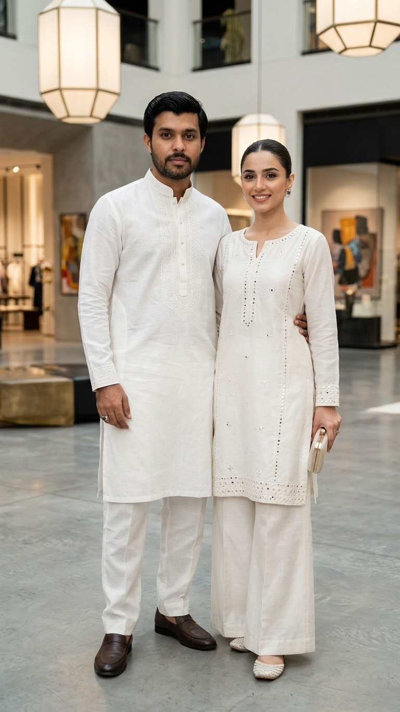

The journal
Style notes written by Haroon. Tap a topic, then tap a story to read it.
Colour story: wedding season
Five colours that look rich in evening light, and what to wear them with.
Emeraldwith gold
Dusty rosewith ivory
Marigoldwith deep maroon
Maroonwith sage
Midnight bluewith silver
About Noorah
Noorah is a fashion journal by Haroon. It covers clothes for men and women that feel good, fit real life and last longer than a trend. Every story has one idea you can use the same day.